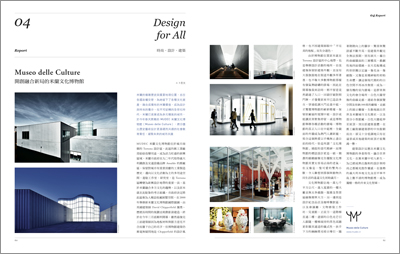
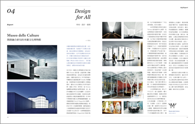

＂人生不是電影，它比電影困難多了。＂—《新天堂樂園》
FEATURE
The Film
電影。聶隱娘
生活不可能像你想像得那麼好，
但也不會像你想像得那麼糟。
我覺得人的脆弱和堅強都超乎自己的想像。
有時，我可能脆弱得一句話就淚流滿面；
有時，也發現自己咬著牙走了很長的路。
—《羊脂球》莫泊桑
侯孝賢－導演｜台灣新電影裡的桀驁不馴。
李屏賓－攝影｜在電影中帶進寫實的光線。
舒淇－演員｜一個人，沒有同類。
林強－配樂｜你在哪個位置比較自在，你就去那個位置。
謝海盟－編劇｜隔閡也是一種角度，人類學式的角度。
黃芝嘉－場記、剪接｜日報表、場記表、底片表與劇本。
CONTENT
01 - AFFAIR 不只是符號的符號，紐西蘭的銀蕨與米字旗
02 - BRAND Bee’s Wrap，蜂蠟、荷荷芭油與樹脂
03 - BOOKS 討海魂：13種即將消失的捕魚技法
04 - DESIGN MUDEC，米蘭文化博物館
05 - VENDORS 西北雨，台南孔廟販售點
擷取部分截圖
 
